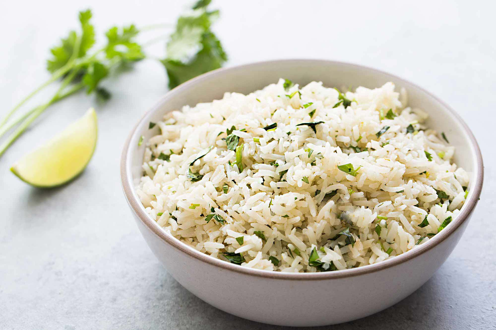

Cilantro Lime Rice
Ingredients:
- 2 Cups Basmati Rice
- 1 Tablespoon Salt
- 1 Tablespoon Vegetable Oil
- 1/2 Bunch Cilantro
- 2 Limes
- Optional: Black or Red Beans
Directions:
- Rinse rice until water runs clear (4+ times)
- Add rice and 2 cups water to InstantPot (1:1 ratio) and cook
- Fluff rice and add vegetable oil (this prevents clumping)
- Add juice of two limes
- Thinly cop cilantro and add to rice
- Mix in beans if desired
Return Home